기뢰와 해협 (1) - 그래서 그들은 갈리폴리로 갔다
게시: 2026-03-19T06:30:20+09:00
<러시아로 향하는 두 군데 해협> WW1이 벌어지면서 복잡한 이유로 갑자기 다다넬즈-보스포러스 해협의 중요성이 더욱 부각됨. 그 복잡한 이유라는 것의 핵심은 결국 러시아. 먼저, 독일의 협박을 받은 덴마크가 중립을 선언하면서 덴마크 해협에 기뢰를 부설해버림. 이렇게 되면서 발트해 전체가 당시 세계 2위의 해군력을 가진 독일의 호수가 되어 버렸는데, 문제는 그러면서 영국 및 프랑스 등 연합국과 러시아의 병참선이 뚝 끊긴 것. 물론 노르웨이 북쪽으로 돌아서 무르만스크 항구 등의 북극해 항구로 가는 방법도 있으나, 그 쪽은 유빙이 많아 위험하고 겨울엔 완전히 얼어붙으므로 곤란. 남은 것이 다다넬즈-보스포러스 해협을 거쳐 흑해의 세바스토폴로 가는 것인데, 그러자면 오스만 투르크가 연합군에게 협조해야 함.
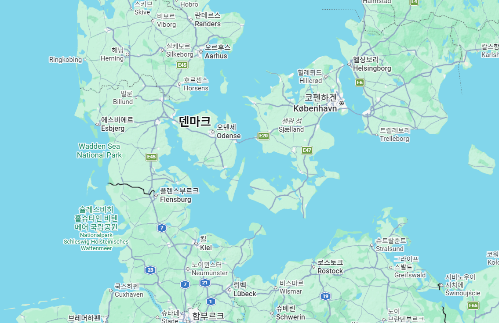
(덴마크 해협의 모습. 코펜하겐은 실은 젤란트 섬에 위치해 있고, 젤란트 섬 양측의 해협을 막으면 발트해와 북해가 단절됨.)
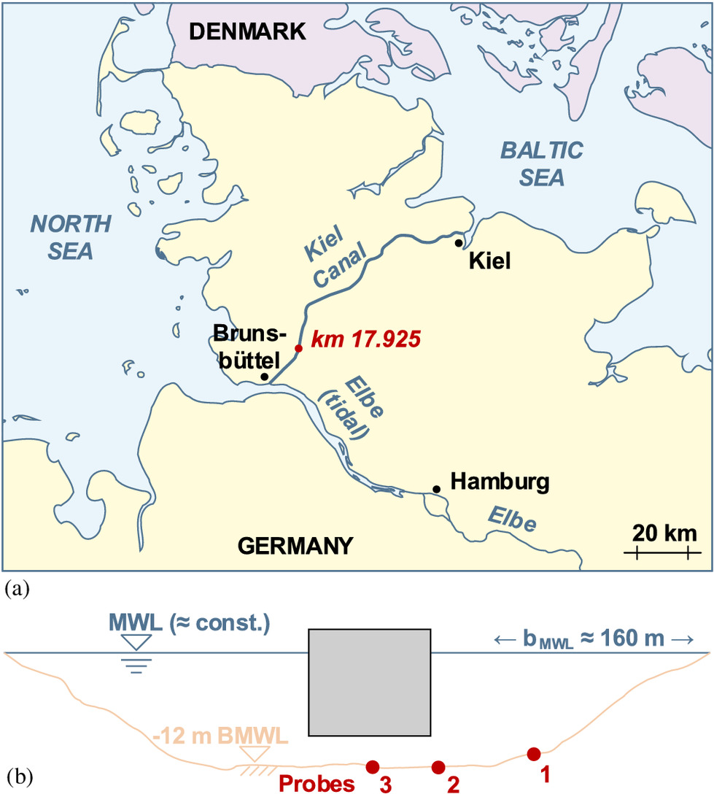
(독일의 대표적 군항인 킬(Kiel)은 발트해 안쪽에 있으니까 덴마크 해협이 막히면 독일해군도 북해로 진출하지 못해 곤란한 것 아닌가 생각할 수 있으나, 독일은 그럴 때에 대비하여 오래전에 킬 운하를 저렇게 파놓았음.)
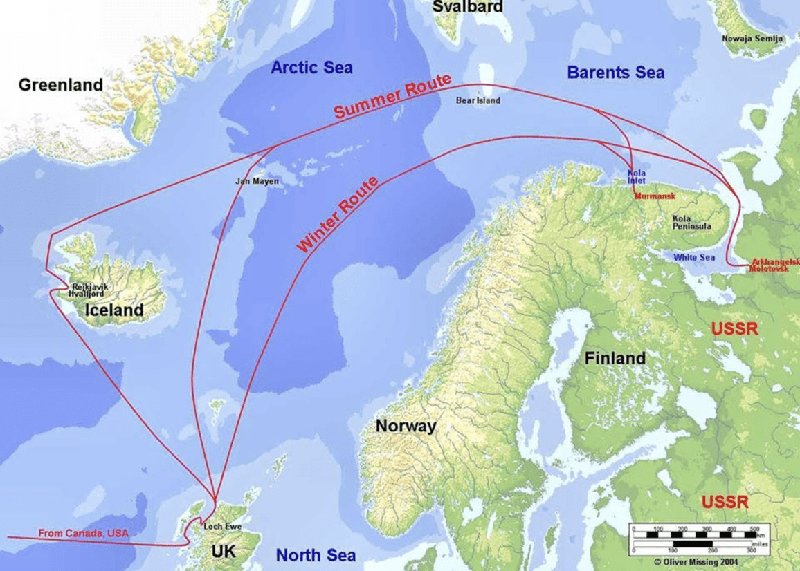
(이건 WW2 때 정말 어쩔 수 없이 사용한 무르만스크로 가는 북극 항로.) 하지만 당시 오스만 투르크는 러시아를 꺾고 대투르크 공영권을 만들겠다는 엔베르(İsmâil Enver) 파샤가 삼두정치의 일인이자 국방부 장관으로 있었음. 엔베르 파샤는 거의 독단으로 독일 해군의 원조를 받아 세바스토폴을 함포 사격함으로써, 사실상 반강제로 오스만 투르크를 독일측에 가담시켜 버림. 더 나아가, 엔베르 파샤는 이집트를 공격하여 수에즈 운하를 손에 넣고 영국과 인도 사이의 병참선을 끊어버리겠다는 원대한 계획도 세움.
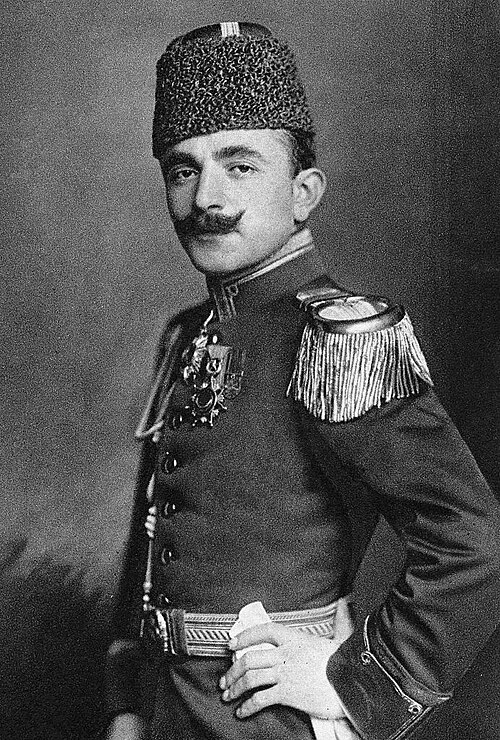
(엔베르 파샤. 그는 훗날 아타튀르크가 되는 케말 파샤와 사관학교 동창이었는데, 이 둘은 사관학교 시절부터 라이벌 관계였음. 엔베르 파샤는 WW1 이전까지는 승승장구했으나 WW1에서 무리한 공세를 취하다 다 말아먹고 그걸 덮겠다고 아르메니아 인종청소를 저지르는 전쟁범죄까지 저지름. Genocide라는 말이 만들어진 것도 엔베르 파샤의 아르메니아 학살이 계기가 됨. 그는 전후 케말 파샤에게 쫓겨나 소련으로 간 뒤 거기서 반(反) 볼셰비키 반란군으로서 소련군과 싸우다 전사. 하필 그를 죽인 소련군 지휘관은 아르메니아 출신이었다고.) 한편, 몇 주 혹은 몇 달 안에 전쟁이 끝날 것이라고 믿고 WW1에 뛰어든 유럽 각국은 서부전선이 기관총의 위력으로 인해 참호전으로 고착화되면서 내심 무척 당황. 이대로 있으면 사상자만 쌓일 뿐 아무 성과가 없이 온 유럽이 공멸할 판국인지라 뭔가 돌파구를 뚫어야 했음. 특히 연합국의 약한 고리였던 러시아가 전쟁 개시하자마자 1914년 8월 말 동프로이센의 탄넨베르크(Tannenberg) 전투에서 독일군에게 대패하면서 영국과 프랑스는 조바심이 났음. 공업력이 빈약했던 러시아는 가뜩이나 무기 부족으로 앓는 소리를 냈었는데 이러다가 러시아가 독일과 단독 강화를 맺고 전쟁에서 빠져버리는 결과가 나오지 않을까 겁이 났던 것. 특히 대투르크 공영권을 만들겠다던 오스만 투르크의 엔베르 파샤가 러시아의 카프카스 지역으로 공세를 취하자 러시아는 영국과 프랑스에게 뭐라도 좀 해보라고 진상을 부렸음.
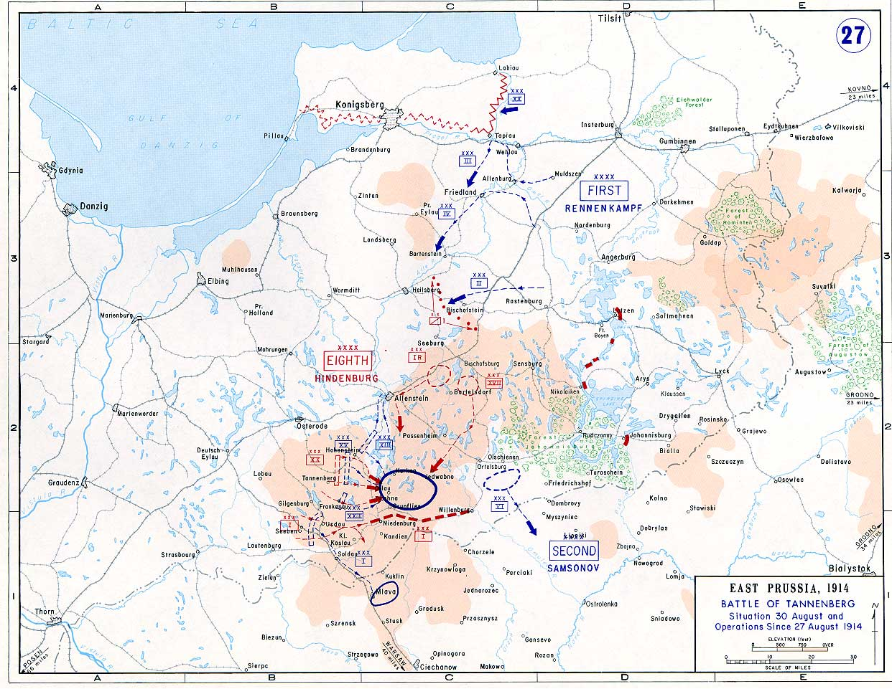
(탄넨베르크 전투 상황도. 예전엔 탄넨베르히 전투라고 표기했었는데, 그건 일본식 표기였다고 함.)
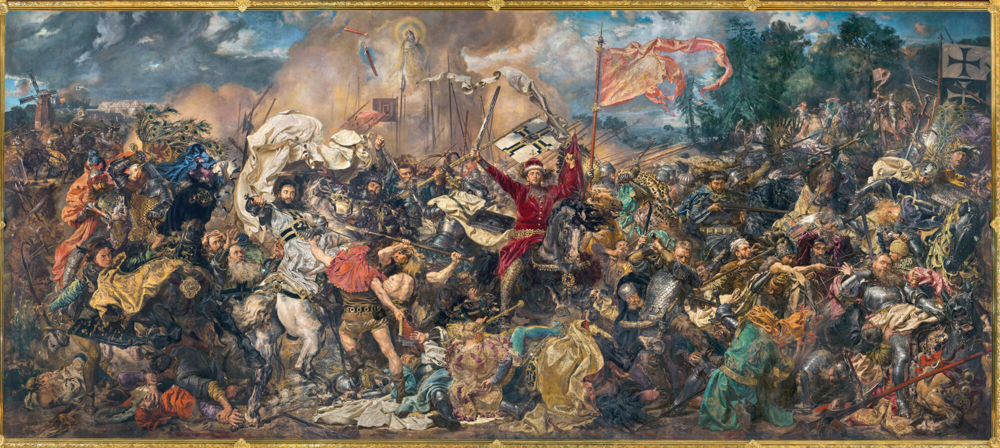
(실은 이 전투가 벌어진 곳은 원래 탄넨베르크와는 거리가 꽤 있으나, 승자인 독일측 힌덴부르크가 중세 튜톤 기사단이 폴란드-리투아니아 왕국에게 괴멸당한 1410년의 탄넨베르크 전투를 복수한다는 의미에서 탄넨베르크 전투로 명명.)
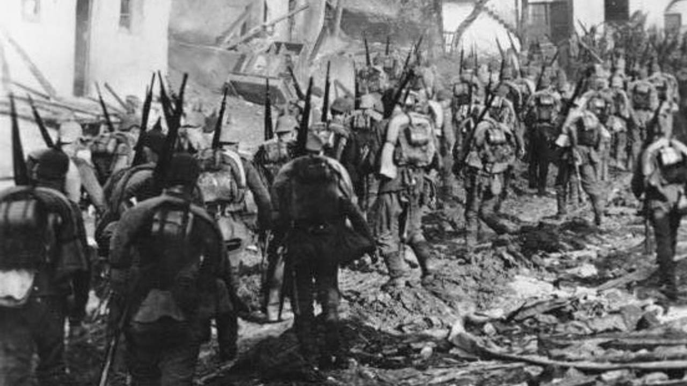
(탄넨베르크 전투에서 전진하는 독일군. 양측은 이 전투에서 각각 약 15만씩이 붙었는데, 독일군이 약 1만4천의 사상자를 낸 것에 비해 러시아군은 약 10만의 사상자 및 포로를 냄.) 일이 이렇게 되자 당시 영국 해군성 장관이던 처칠은 두 가지 안을 내놓는데, 1안은 덴마크 남쪽인 슐레스비히-홀슈타인에 상륙하여 덴마크를 연합국으로 끌어들이고 덴마크 해협 봉쇄를 뚫는다는 안이었고, 2안은 다다넬즈-보스포러스 해협에 상륙하여 이스탄불을 점령한 뒤 오스만 투르크를 연합국으로 끌어들여 다다넬즈-보스포러스 해협 봉쇄를 뚫는다는 안. 연합군은 아무래도 '유럽의 병자'였던 오스만 투르크를 만만하게 보고 2안을 채택. 무엇보다, 오스만 투르크가 중요했던 이유가 다다넬즈-보스포러스 해협을 차지하고 있다는 점이기도 했지만, 오스만 투르크의 약점이 그 수도 이스탄불이 다다넬즈-보스포러스 해협에 붙어있다는 점이었음. 즉, 강력한 해군력이 있으면 볼 것 없이 그대로 밀고 들어가 이스탄불에 함포 사격을 가할 수 있다는 점이 연합군으로서는 너무나 매력적이었음. <약자에게 더 유리한 기술의 발전> 처칠은 독일의 대양함대(Hochseeflotte, 호흐제플로테, 영어로는 High Seas Fleet)와 대치하고 있던 영국의 그랜드 함대(Grand Fleet, Home Fleet와 Atlantic Fleet를 통합하여 편성)에는 들어갈 수 없던 작고 느리고 낡은 전노급(pre-dreadnaught) 전함들 위주로 다다넬즈 함대를 구성. 그래도 모조리 구닥다리 전함으로만 꾸미면 모양이 너무 빠진다고 생각했는지 1913년 진수된 최신예 수퍼드레드노트급 전함 HMS Queen Elizabeth (3만3천톤, 24노트)와 1907년 진수된 신예 순양전함 HMS Inflexible(2만톤, 26노트)는 포함시킴. 전함이 총 29척, 전함이나 다름없는 순양전함 3척, 순양함 23척, 구축함 25척이 동원된 대함대 (다만 이들이 다 한꺼번에 집결한 것은 아님). 이 막강한 해군력으로 다다넬즈-보스포러스 해협을 돌파하고 이스탄불을 지키는 요새들을 포격으로 제압한 뒤, 싣고 간 해병대와 함께 육군 1개사단을 상륙시켜 최종적으로는 이스탄불을 점령한다는 계획.
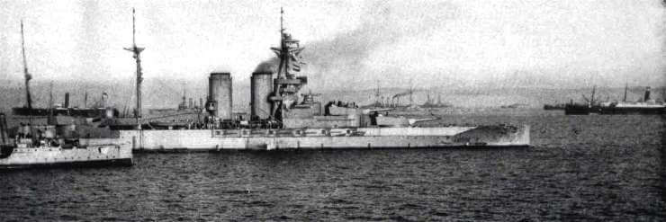
(HMS Queen Elizabeth는 WW2에서도 활약한 전함으로서, 당시로서는 매우 획기적인 최신예함. 기존 전함과 가장 큰 차이는 석탄 대신 중유를 연료로 썼다는 것. 이에 대해서는 https://nasica1.tistory.com/325 참조. 이 사진은 WW1 당시의 모습.)
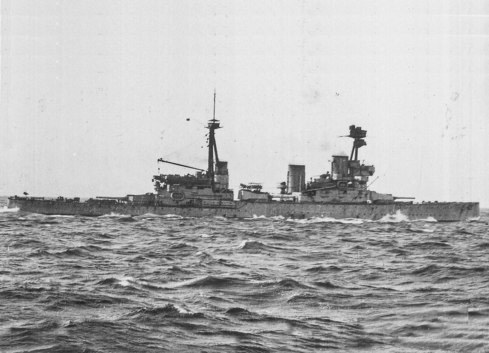
(HMS Inflexible. 이것도 당시로서는 꽤 신예함이었으나 이것도 연료는 석탄.) 약 100년 전인 1807년, 덕워쓰(Duckworth) 제독의 영국 함대가 하려던 것이 바로 그런 것이었으나 (https://nasica1.tistory.com/946 참조) 덕워쓰가 보기 좋게 실패했던 그 계획이 이번에는 성공하리라고 생각했던 것은 이번에는 엄청난 수의 전함을 동원하는 것도 있지만, 그 사이 해군 기술이 크게 발달하여, 넬슨 제독 시대엔 상식이었던 'A warship is a fool to fight a fort'라는 말이 더 이상 통하지 않는 시대가 되었기 때문. 대서양에서 독일 해군과 싸우기엔 너무 작고 낡았다는 이유로 다다넬즈 함대에 배속된 전노급 전함 HMS Majestic(1만6천톤, 16노트)만 해도 12인치 주포 4문을 장착했고, 신예 전함인 퀸 엘리자베스의 경우엔 15인치 주포를 8문이나 장착. 이 정도 화력이면 오스만 투르크의 해협 요새들의 대포 100여문은 쉽게 제압할 수 있다고 생각했던 것. 실제로 다다넬즈 해협의 양쪽 해안에 배치된 오스만 투르크 해안 요새들의 대포는 대략 100여문이었는데, 그 중 대부분은 낡고 작은 것이라서 사거리가 짧았고, 10km 이상의 사거리를 내는 신형 장거리포는 14인치 포 5문을 포함하여 14문에 불과.
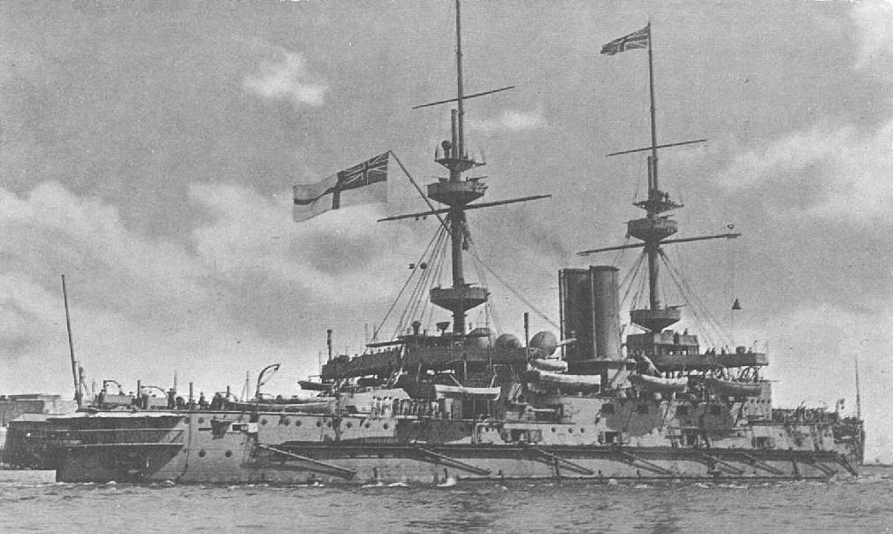
(곧 다시 등장할 HMS Majestic.)
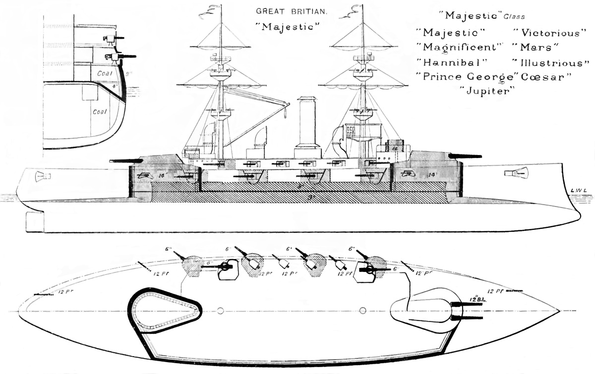
(HMS Majestic의 구조도를 보면 현대식 전함에 비해 낡은 티가 확 드러남. 회전식 주포탑 2기 이외에, 마치 넬슨 시대의 전열함처럼 많은 부포들이 현측에 붙어 있는 것이 보임. HMS Queen Elizabeth와 비교할 때 가장 큰 차이는 석탄 보일러냐 중유 보일러냐 하는 점. 석탄 보일러가 더 무겁지만 출력은 더 낮았음.) 이 차이는 수비측에서 볼 때도 명확했음. 오스만 투르크의 해안 포대들을 점검한 독일 해군 제독 우제돔(Guido von Usedom)은 현재의 장비와 훈련 정도로는 연합군 함대를 막는 것이 무리라고 보았고, 특히 탄약마저 부족하여 장기간 교전이 아예 불가능하다고 보았음. 하지만 그렇다고 포기한 것은 아니었음. 해군 기술이 발달하여 거함거포 시대가 되었기에 강대국과 약소국의 전력 차이가 극복할 수 없는 수준으로 벌어지기도 했지만, 해군 기술의 발전은 약소국에게도 살 길을 열어 주었음. 바로 기뢰.
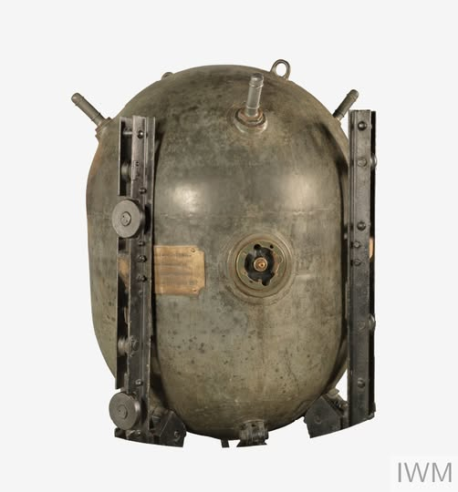
(WW1 기간 중 독일 U-boat가 영국 템즈강 하류에 부설한 기뢰. 1917년 소해정이 발견하고 수거. WW1 기간 중 양측은 약 23만5천발의 기뢰를 바다에 부설.) 우제돔 제독은 다다넬즈 해협에 기뢰를 촘촘히 부설하여 영불 연합함대를 막기로 함. 당연히 연합군 측에서도 그건 예상하고 있었고, 그런 기뢰들을 제거하기 위해 충분한 수의 소해함들을 끌고 감. 오스만 측에서도 당연히 소해함이 올 거라는 것을 예상했고, 그 소해함을 막는데 해안포들을 사용할 생각이었음. 결국 이 싸움은 연합군의 소해 활동을 방해하는 오스만 해안 포대를 연합 함대가 얼마나 효과적으로 박살내느냐에 달려 있었음.
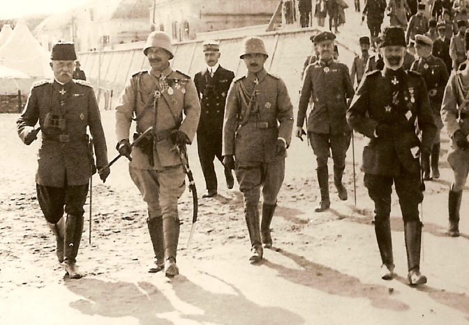
(이 사진은 갈리폴리 전투가 끝난 뒤에 촬영된 것으로서, 맨 왼쪽이 오스만 군복 차림의 우제돔 제독, 그 오른쪽이 카이저 빌헬름 2세, 그 오른쪽이 엔베르 파샤.) ** 이란 전쟁과 호르무즈 해협 봉쇄를 맞이하여, 다음 주 월요일에는 나폴레옹 시리즈를 1회 쉬고 WW1의 다다넬즈 봉쇄전을 계속 연재하겠습니다. 다다넬즈 봉쇄전과 기뢰 이야기는 아마 총 3회면 마무리 될 것이니, 나폴레옹 시리즈가 쉬는 것은 다음 주 월요일 1회뿐일 것입니다. 양해 부탁드립니다.